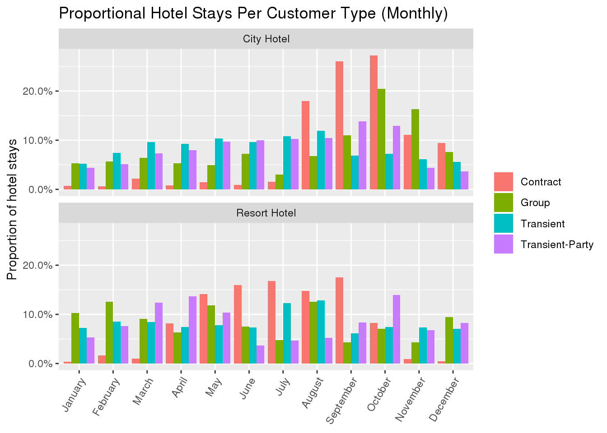

hotels <- readr::read_csv('https://raw.githubusercontent.com/rfordatascience/tidytuesday/master/data/2020/2020-02-11/hotels.csv')Hotel Booking
For the Hotel Booking project I am going to analyze a data set named hotels.csv from the Tidy Tuesday website to find the how variables affect a customer’s booking and then demonstrate these affects through graphs. The dataset hotels.csv contains 119,390 observations and 32 variables: The variable hotel shows if they booked a resort or city hotel. The variable is_canceled shows if it was canceled or not. The variable lead_time shows the number of days that will elapse before the customer arrive. The variables arrival_date_year, arrival_date_month, arrival_date_week_number and arrival_date_day of the month each specify a specific part of the date. The variables stays_in_weekend_nights and stays_in_week_nights show either the number of weekend or weekday nights the customer stayed. The variables adults, children and babies list the number of each. The meal variable shows the category of hospitality the customer bought. The variable country represents the country of origin. The variable market_segment shows the market segment designation in terms of “TA” meaning “Travel Agents” and “TO” meaning “Tour Operators.” The var is_reapeated_guest shows the value 1 for a reapeated guest and 0 if not. The variables previous_cancellation lists the number of previous cancellations by that customer and previous_bookings_not_canceled lists the number of previous booking not cancelled by the current booking. The variable reserved_room_type shows the type of room reserved and the variable assigned_room_type shows the type of room assigned to the booking. The variable booking_changes shows the number of amendments made from the initial booking until check in. The variable deposit_type categorizes the booking as either No Deposit, Non Refund or Refundable. The variable agent shows the travel agency that made the booking. The variable company shows the id of the company that made the booking. The variable days_in_waiting_list shows the number of days the customer waited until the booking was confirmed. The variable customer_type categorizes the type of booking to either Contract, Group, Transient or Transient-party. The variable adr shows the average daily rate by dividing the sum of all lodge transaction by the number of staying nights. The variable required_car_parking_spaces shows the number of spaces required in the booking. The variable total_of_special_requests shows the number of special requests made by each customer. The variable reservation_status categorizes the customer reservation by Canceled, Check-Out or No-Show. Lastly the variable reservation_status_date shows the date at which reservation was last checked or looked at.
Question 1:
How does the proportion of hotel residents differ from customer type between City Hotels and Resort Hotels?
The customer type variable has 4 different values: Contract, Group, Transient, Transient-Party. I created a bar graph that displays the proportion monthly for each of the four customer types at both types of hotels
hotel_stays <- hotels %>%
filter(is_canceled == 0)hotel_stays %>%
mutate(arrival_date_month = factor(arrival_date_month, levels = month.name)) %>%
count(hotel, arrival_date_month, customer_type) %>%
group_by(hotel, customer_type) %>%
mutate(proportion = n / sum(n)) %>%
ggplot(aes(arrival_date_month, proportion, fill = customer_type)) +
geom_col(position = "dodge") +
scale_y_continuous(labels = scales::percent_format()) +
facet_wrap(~hotel, nrow = 2) +
labs( title = "Proportional Hotel Stays Per Customer Type (Monthly)",
x = NULL, y = "Proportion of hotel stays", fill = NULL) +
theme(axis.text.x = element_text(angle = 60, hjust = 1))
Question 2:
How do cancellations differ between the two types of hotels?
The two types of hotels in the variable hotel are City and Resort. The first of the two graph demonstrates the cancellation rates for City Hotels and Resort Hotels. The cancellation rates shows that the percentage of canceled bookings is higher for both types of hotels, with the city hotel being responsible for 38.7 % of cancellations and the resort hotel making up 24.2% more. The second of the two graphs below displays box-plots for the canceled bookings and non canceled bookings, and then plots the lead_time value for both city hotels and resort hotels. The cancellation rates shows that the percentage of canceled bookings is higher for both types of hotels, with the city hotel being responsible for 38.7 % of cancellations and the resort hotel making up 24.2% more. The boxplot shows that their is less lead time on the average canceled booking.
plot1 <- ggplot(hotels, aes(hotel, prop.table(stat(count)), fill = factor(is_canceled), label = scales::percent(prop.table(stat(count))))) +
geom_bar(position = position_dodge2()) +
geom_text(stat = "count", position = position_dodge2(.75), vjust = .05, size = 3) +
scale_y_continuous(labels = scales::percent) +
labs(title = "Cancellation Rate Per Hotel Type", x = "Hotel Type", y = "Proportion ") +
theme_light() +
scale_fill_discrete(name = "Status", breaks = c("0", "1"), labels = c("Canceled", "Not Canceled"))
plot2 <- ggplot(hotels, aes(x = hotel, y = lead_time, fill = factor(is_canceled))) +
geom_boxplot(position = position_dodge2()) +
labs(title = "Cancellation Based On Lead Time", x = "Hotel Type", y = "Lead Time in Days" ) +
scale_fill_discrete(name = "Status", breaks = c("0", "1"), labels = c("Canceled", "Not Canceled")) + theme_light()
grid.arrange(plot1, plot2, ncol = 2)
Question 3?
How does the booking status change for each country?
The booking status has a wide variety of values when comparing coutries
library(countrycode)
hotels_1 <- hotels[hotels$reservation_status == "Check-Out",]
sub_hotel <- hotels_1 %>%
group_by(country) %>%
filter(n() > 1500)
sub_hotel$county_name <- countrycode(sub_hotel$country, origin = "iso3c",
destination = "country.name")
ggplot(sub_hotel, aes(county_name, fill = hotel)) +
geom_bar(stat = "count", position = position_dodge()) +
labs(title = "Booking Status by Country",
x = "Country",
y = "Count") +
theme(axis.text.x = element_text(angle = 90, hjust = 1),
panel.background = element_blank())